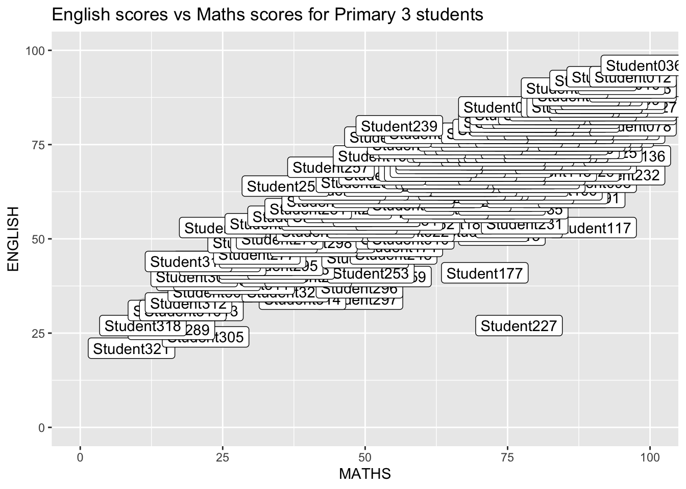
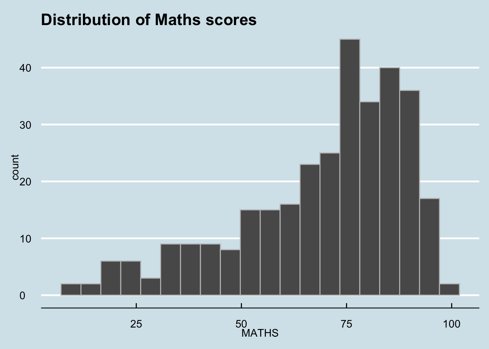
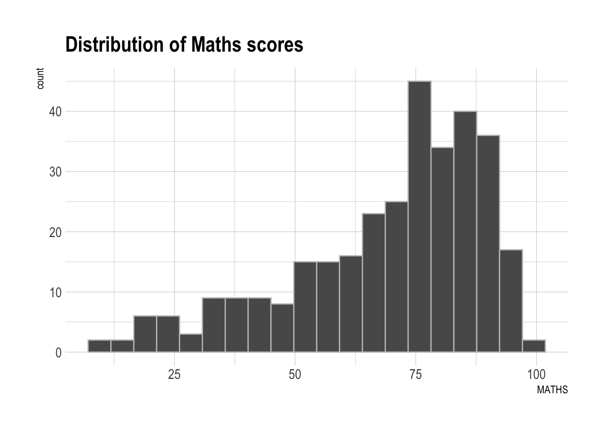
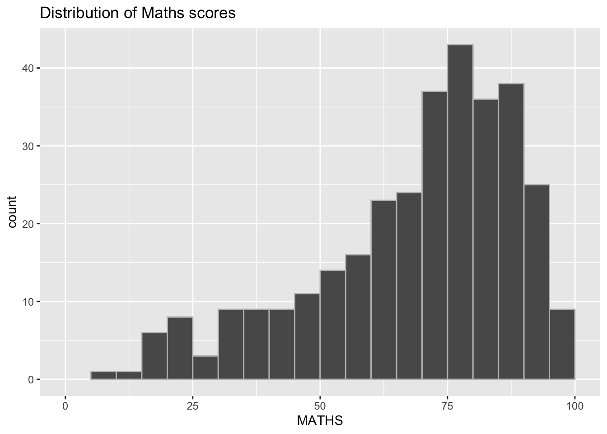
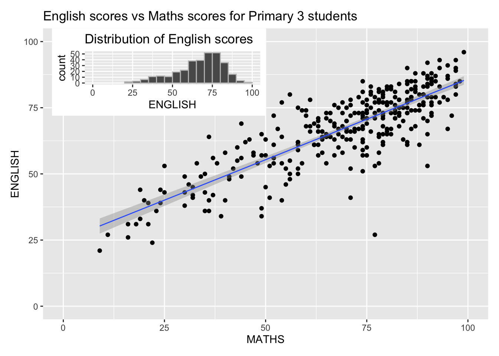

pacman::p_load(ggrepel, patchwork, ggthemes, hrbrthemes, tidyverse) Hands-On Exercise 2
Getting Started
Install and Load Required Packages
The code chunk below will be used to check if these packages have been installed and also will load them onto your working R environment:
Import the Data
exam_data <- read_csv("data/Exam_data.csv")Rows: 322 Columns: 7
── Column specification ────────────────────────────────────────────────────────
Delimiter: ","
chr (4): ID, CLASS, GENDER, RACE
dbl (3): ENGLISH, MATHS, SCIENCE
ℹ Use `spec()` to retrieve the full column specification for this data.
ℹ Specify the column types or set `show_col_types = FALSE` to quiet this message.Annotations without overlapping labels
Annotation using default ggplot geom_label()
ggplot(data=exam_data,
aes(x=MATHS,
y=ENGLISH)) +
geom_point() +
geom_smooth(method=lm,
linewidth=0.5) +
geom_label(aes(label=ID)) +
coord_cartesian(xlim=c(0,100),ylim=c(0,100)) +
ggtitle("English scores vs Maths scores for Primary 3 students")`geom_smooth()` using formula = 'y ~ x'
Annotation using ggrepel geom_text_repel()
ggplot(data=exam_data,
aes(x=MATHS,
y=ENGLISH)) +
geom_point() +
geom_smooth(method=lm,
linewidth=0.5) +
geom_label_repel(aes(label=ID)) +
coord_cartesian(xlim=c(0,100),ylim=c(0,100)) +
ggtitle("English scores vs Maths scores for Primary 3 students")`geom_smooth()` using formula = 'y ~ x'Warning: ggrepel: 317 unlabeled data points (too many overlaps). Consider
increasing max.overlapsBeyond ggplot2 Themes
Using default ggplot2 theme_gray theme
ggplot(data=exam_data,
aes(x=MATHS)) +
geom_histogram(bins=20,
color='grey75') +
theme_gray() +
ggtitle("Distribution of Maths scores")Using ‘Economist’ theme from ggthemes
ggplot(data=exam_data,
aes(x=MATHS)) +
geom_histogram(bins=20,
color='grey75') +
theme_economist() +
ggtitle("Distribution of Maths scores")
Using hrbrthemes package
ggplot(data=exam_data,
aes(x=MATHS)) +
geom_histogram(bins=20,
color='grey75') +
theme_ipsum() +
ggtitle("Distribution of Maths scores")
Plotting Multiple Graphs using patchwork
Initial Graphs
p1 <- ggplot(data=exam_data,
aes(x=MATHS)) +
geom_histogram(binwidth=5,
boundary=100,
color='grey75') +
coord_cartesian(xlim=c(0,100)) +
ggtitle("Distribution of Maths scores")
p1
p2 <- ggplot(data=exam_data,
aes(x=ENGLISH)) +
geom_histogram(binwidth=5,
boundary=100,
color='grey75') +
coord_cartesian(xlim=c(0,100)) +
ggtitle("Distribution of English scores")
p2p3 <- ggplot(data=exam_data,
aes(x=MATHS,
y=ENGLISH)) +
geom_point() +
geom_smooth(method=lm,
linewidth=0.5) +
coord_cartesian(xlim=c(0,100),ylim=c(0,100)) +
ggtitle("English scores vs Maths scores for Primary 3 students")
p3`geom_smooth()` using formula = 'y ~ x'Two Graphs
p1 + p2Three Graphs
(p1 / p2) | p3 +
plot_annotation(tag_levels='I')`geom_smooth()` using formula = 'y ~ x'Inset another graph
p3 + inset_element(p2,
left = 0.02,
bottom = 0.7,
right = 0.5,
top = 1)`geom_smooth()` using formula = 'y ~ x'
Combining with themes
patchwork <- (p1 / p2) | p3
patchwork & theme_economist()`geom_smooth()` using formula = 'y ~ x'